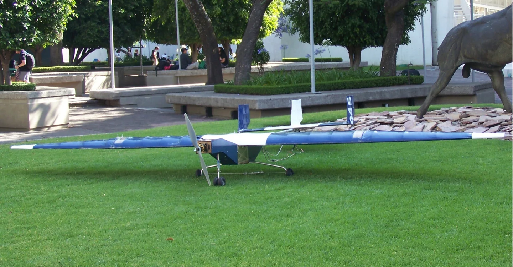
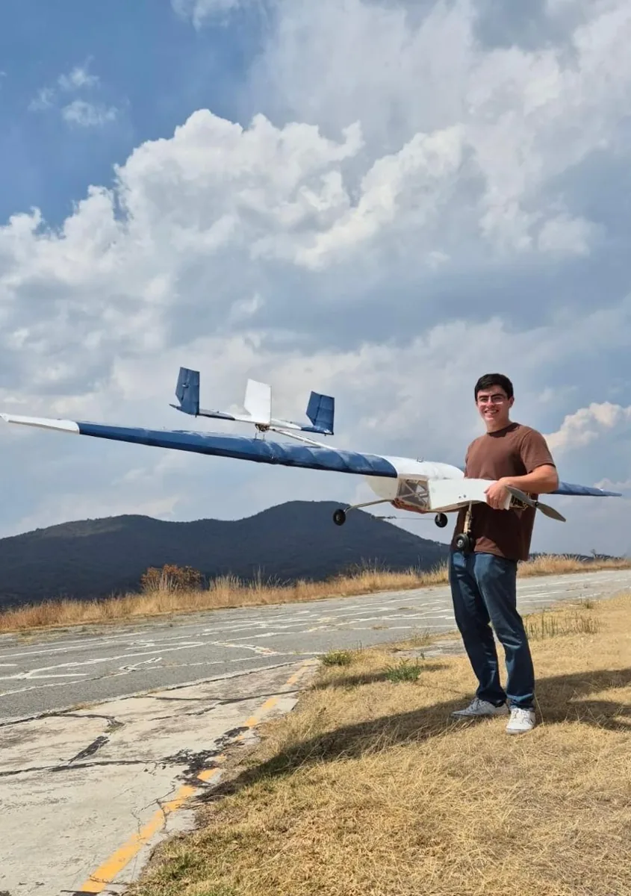
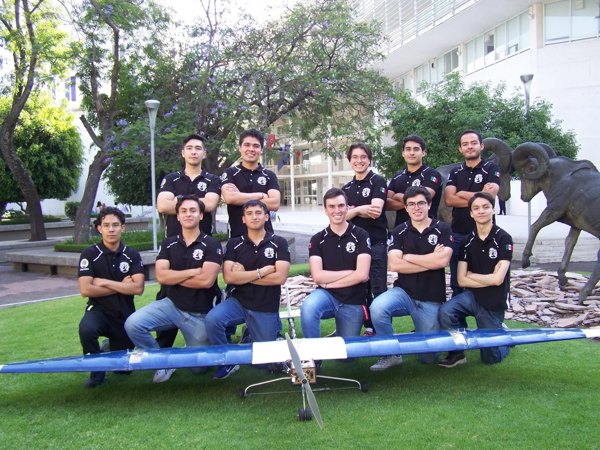
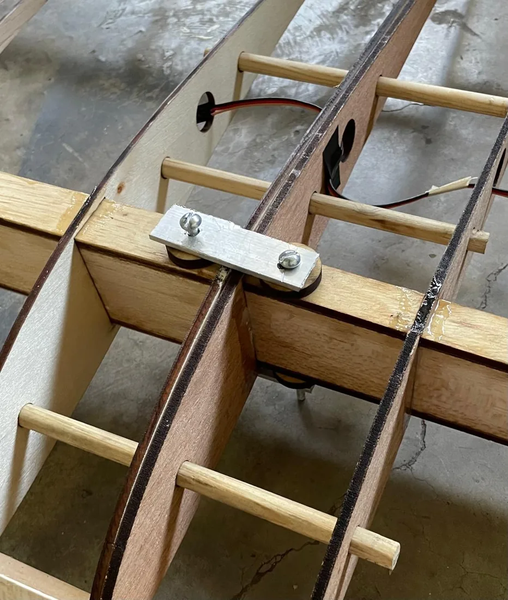
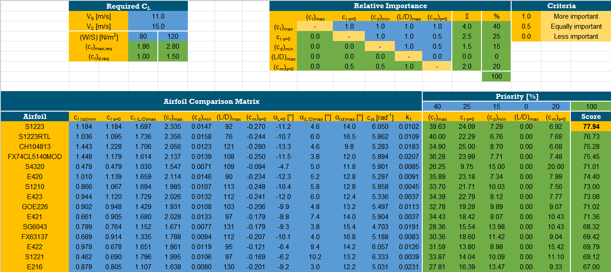
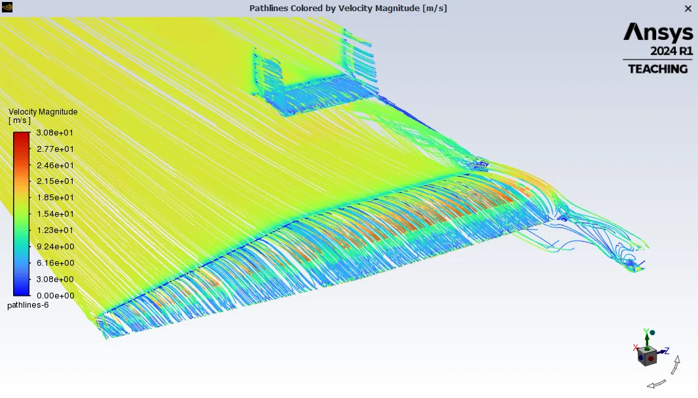
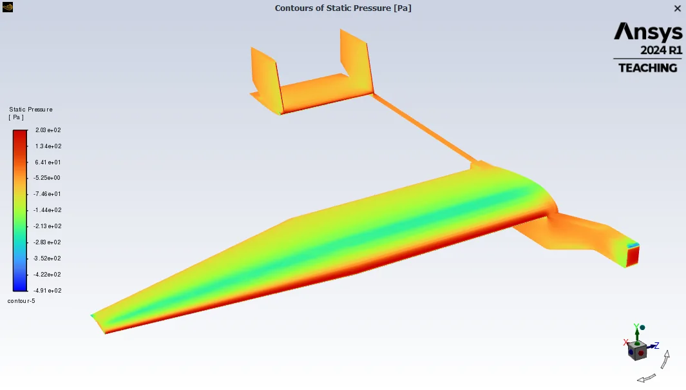

Concept to detailed CAD
I developed the conceptual and theoretical design and personally modeled more than 300 parts within an assembly of over 400 components, including simplified, clean geometry for analysis.
SAE AERO DESIGN EAST · 2025 · REGULAR CLASS · BORREGOS CEM
Aircraft design, removable wing joints and structural testing, developed from concept to flight.
Design Captain & Engineering Coordinator


MY CONTRIBUTION
As Design Captain & Engineering Coordinator, I made the aircraft design decisions with research support from a five-person design team. I coordinated more than 40 engineering members across design, structures, electronics and R&D to integrate the aircraft.
I developed the conceptual and theoretical design and personally modeled more than 300 parts within an assembly of over 400 components, including simplified, clean geometry for analysis.
I evaluated mass, center of gravity, materials, geometry, stability, control, propulsion and cargo-bay concepts. My work included CFD, motor and propeller selection, and impact-test design.

01 / DESIGN & INTEGRATION
The aircraft had to fit into components shorter than 1.2 m. I designed removable wing joints with three pine alignment pins, connectors for the aileron wiring, and aluminum locking plates bolted above and below the main spar.
The spar used 6 mm pine caps and ¼-inch balsa sidewalls. The pins aligned adjacent sections while the plates secured the connection across the joint.

I divided the vertical stabilizer into three surfaces to meet the height limit and kept each part within the 1.2 m transport constraint.
The selected 24-inch propeller and wing height required a raised nose contour so the propeller would clear the runway.
I worked with structures to replace an impractical all-balsa proposal with pine and balsa. The balsa parts were redesigned as joined segments that fit the available laser cutter.
02 / STRUCTURAL TEST
We inverted the complete wing and applied 18 kg of distributed mass according to a Schrenk-based spanwise loading plan. This was 1.5 times the 12 kg design mass under the corresponding static load comparison.
The test checked the assembled wing at the planned load. We did not test it to failure, so it does not establish the ultimate failure load or a quantified deflection error.
AERODYNAMIC DESIGN / XFLR5
We compared 15 candidate airfoils in XFLR5 to select the profile best suited to Wingull's aerodynamic requirements. A weighted decision matrix translated mission priorities into a consistent comparison of lift, drag and pitching moment.
The study used a target stall speed of 11 m/s, a cruise speed of 15 m/s and wing loadings of 80–120 N/m² to define required lift coefficients: 1.86–2.80 at stall and 1.00–1.50 in cruise.
| Criterion | Weight |
|---|---|
| Maximum lift, Cl,max | 40% |
| Lift at zero angle, Cl,α=0 | 25% |
| Pitching moment, Cm,α=0 | 20% |
| Minimum drag, Cd,min | 15% |
Maximum lift-to-drag ratio was also compared, but carried 0% weight in the final score.
77.94 / 100 · highest weighted score among 15 candidates.
Normalized aerodynamic values were combined using the stated weights. S1223 provided the strongest overall result for this set of priorities, with a predicted Cl,max of 2.335 and Cl,α=0 of 1.184.
Top four candidates · weighted score on a 0–100 scale. S1223 led S1223RTL by 1.21 points; the ranking reflects this matrix's chosen weights.

03 / ANALYSIS TO FLIGHT
I used drag coefficients from CFD in the takeoff-run model to estimate allowable payload for the density altitude of the day. Aerodynamic work combined theory, XFLR5 and CFD.


Flight testing took place at Atizapán, where low air density, an uneven runway and terrain-related wind complicated operations. We adjusted the reference takeoff-distance limit to local conditions and verified that the aircraft became airborne before it. We did not log takeoff distances for a quantitative prediction-error comparison.
04 / FLIGHT OPERATIONS
The competition presentation assigned me responsibility for Aircraft 1 assembly, propeller connection and structural preflight and postflight checks. Two assembly crews supported two aircraft.
The team checklist covered wing and tail integrity, landing gear, payload security, electrical connections and control-surface direction and authority.
The plan called for a pilot debrief using the Cooper–Harper handling-quality scale, followed by adjustments to balance, servo limits, propulsion settings and repairs.
Custom boxes, spare parts and assembly instructions supported transport. The mission required outer-wing installation on the runway and cargo-bay handling within 60 seconds.
RESULTS & REFLECTION
Wingull flew at 10 kg total mass: 6 kg empty plus 4 kg of payload. The design target was 12 kg total. Competition time constraints prevented an attempt at that mass; it remains a design target rather than a demonstrated flight result.
| Design | 10th |
|---|---|
| Presentation | 7th |
| Standing before flight rounds | 5th |
| Overall | 18th |
Borregos CEM finished as the highest-ranked Latin American team at this event.
The project brought together design ownership, detailed CAD, interdisciplinary coordination and physical testing.